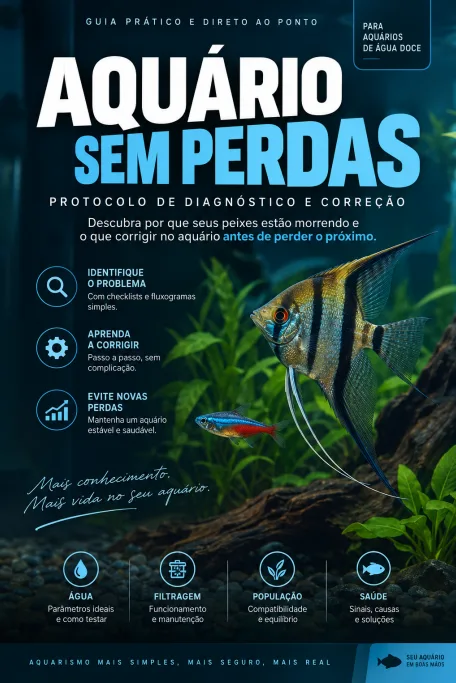
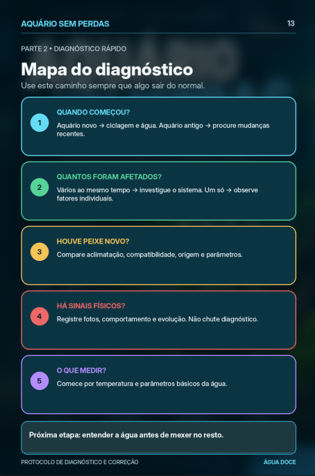
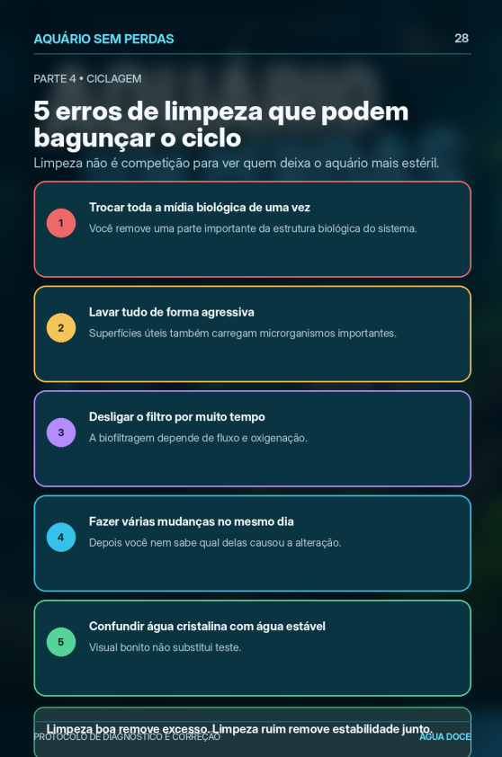
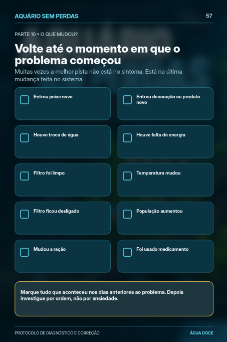
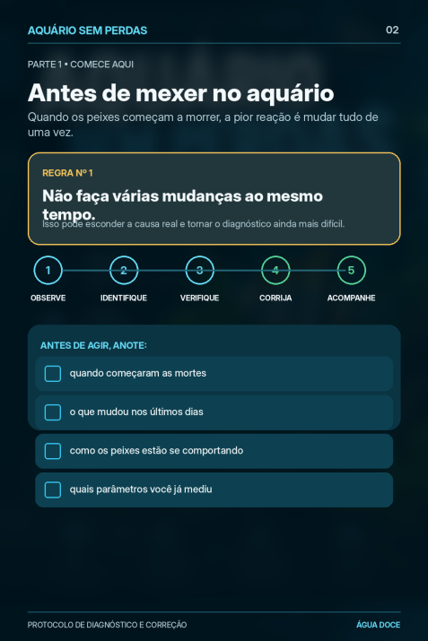
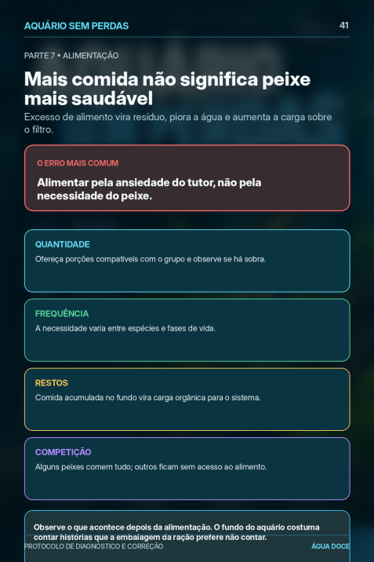
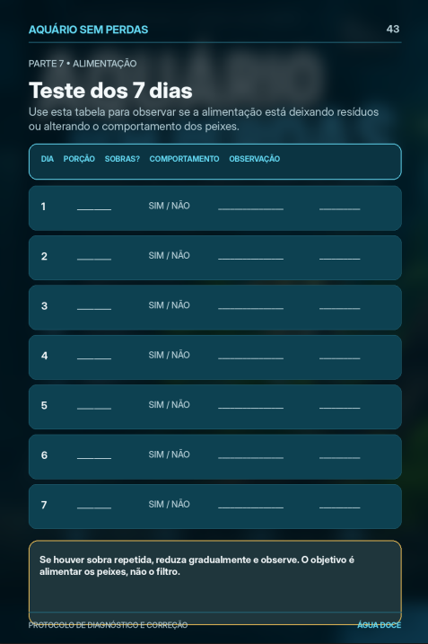
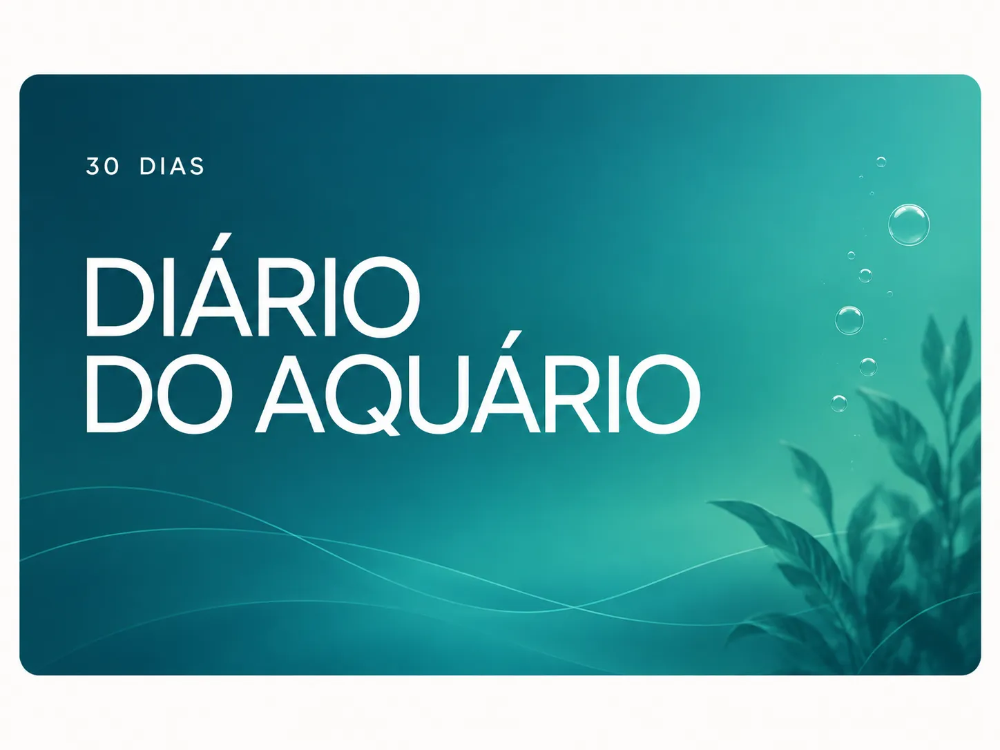
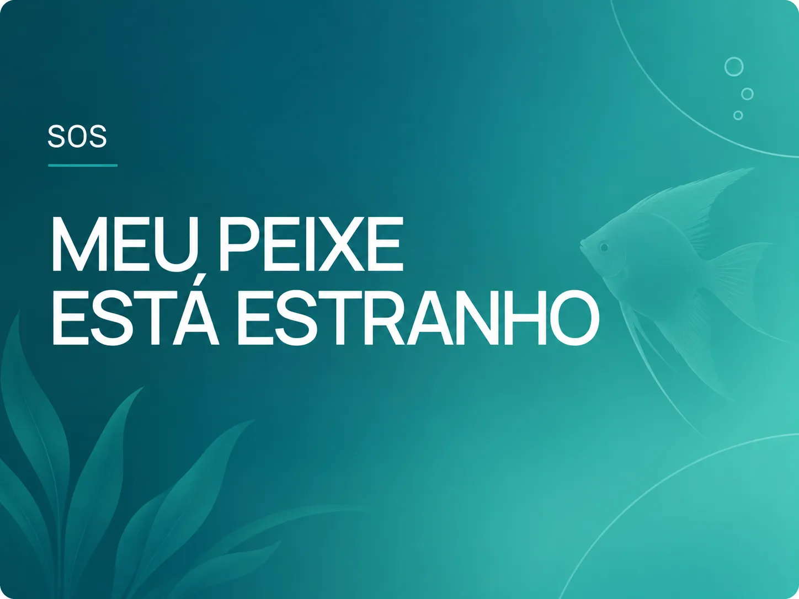
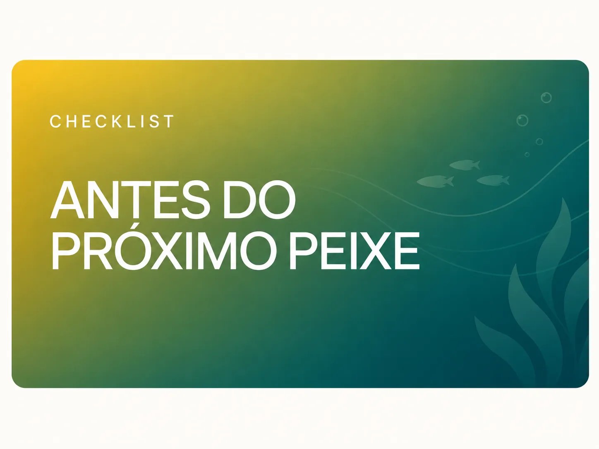

OBSERVE
Comportamento e estado do aquário.
● PARA QUEM JÁ PERDEU UM OU MAIS PEIXES
Descubra o que pode estar errado no seu aquário e saiba o que verificar antes de perder o próximo.
Um protocolo prático de diagnóstico para investigar água, ciclagem, filtragem, oxigenação, alimentação, população e outras causas comuns sem fazer mudanças aleatórias.
QUERO ACESSAR O PROTOCOLO POR R$19,90 →

Antes de comprar outro peixe, investigue primeiro o aquário.
Uma sequência simples para saber o que observar, o que verificar e qual passo executar primeiro.
Comportamento e estado do aquário.
Sinais e pontos de atenção.
Os pontos certos em ordem lógica.
O que estiver inadequado.
Veja se a situação melhora.
De “não faço ideia do que está acontecendo” para “sei exatamente o que verificar primeiro”.
QUERO ACESSAR O PROTOCOLO POR R$19,90 →🔒 Pagamento seguro • ⚡ Acesso imediato • ↩ 7 dias de garantiaResponda perguntas simples e vá direto aos pontos que merecem investigação.
O produto entrega clareza sobre o que investigar — não apenas informação.
SIM ↓
Verifique ciclagem,
amônia e nitrito.
NÃO ↓
As mortes começaram
depois de uma mudança?
SIM ↓
Parâmetros, aclimatação
e compatibilidade.
NÃO ↓
Água, filtragem,
oxigenação e população.





Arraste ou use as setas para ver páginas reais do protocolo →
Você responde o que está acontecendo, entende por onde começar e segue para o checklist correspondente.
Você recebe:
Pagamento único.
QUERO ACESSAR O PROTOCOLO POR R$19,90 →🔒 Pagamento seguro • Acesso imediato • 7 dias de garantia
Registre parâmetros, alimentação, manutenção, mudanças e comportamento.

Consulte quais pontos merecem atenção primeiro quando notar algo diferente.

Verifique estabilidade, parâmetros, filtragem, espaço e compatibilidade.
Sim. Você começa pelo estado atual do seu aquário e pelos pontos que precisam ser verificados.
Sim. O protocolo organiza o que observar e verificar em uma sequência clara.
Não existe uma lista obrigatória. Primeiro, você identifica o que merece atenção.
Sim. O material digital pode ser consultado facilmente pelo celular.
O acesso é liberado após a confirmação do pagamento, conforme as condições informadas no checkout.
VOCÊ RECEBE HOJE:
+2.500 clientes satisfeitos
Pagamento único. Sem mensalidade.
QUERO ACESSAR O PROTOCOLO POR R$19,90 →🔒 Pagamento seguroAcesse o material, conheça o método e veja se ele faz sentido para você. Caso não seja o que esperava, poderá solicitar reembolso dentro do período informado no checkout.